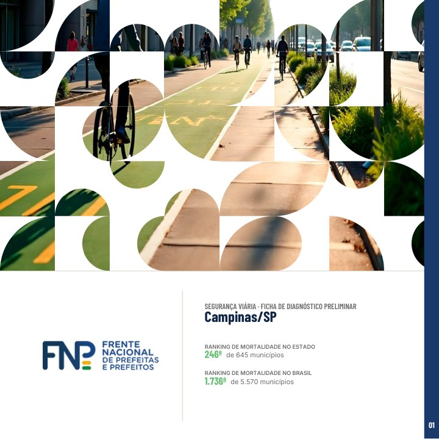
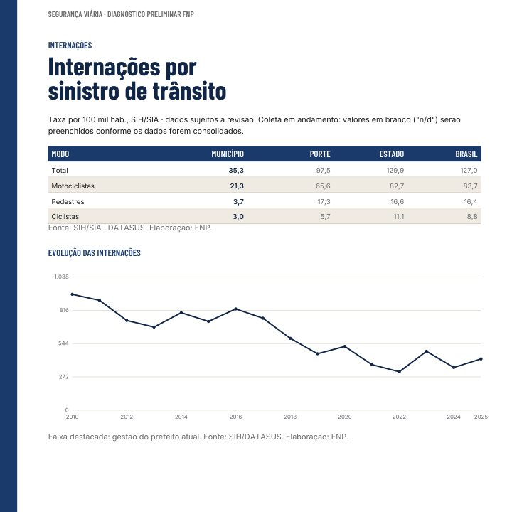

Encontre o relatório do seu município
Digite o nome do município ou a UF para filtrar a lista. Cada folheto traz a comparação da taxa de mortalidade no trânsito, a evolução da frota e o peso das internações por sinistro no sistema de saúde.
Como é o folheto
11 páginas · exemplo: Campinas/SP


Capa, taxa de mortalidade e série histórica. Cada folheto compara o município com o recorte metropolitano, cidades de mesmo porte, o estado, o Brasil e as capitais.
Nenhum município encontrado para esta busca.